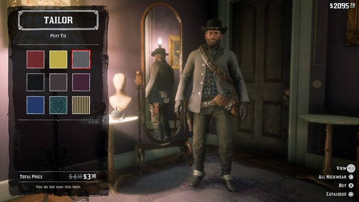
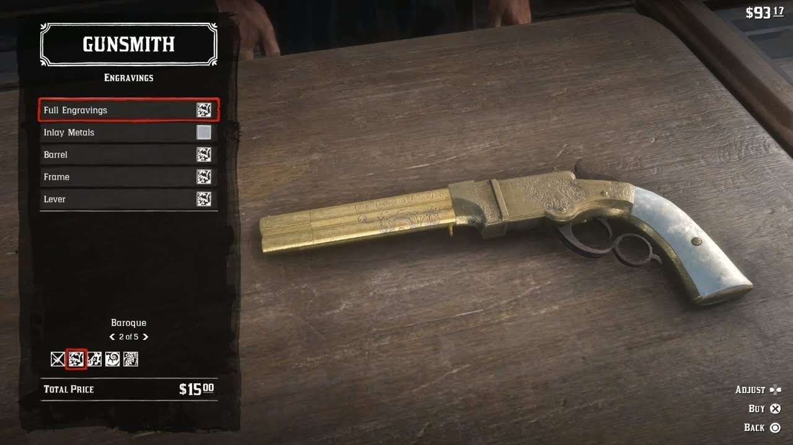

|  |
| Os amantes da customização também terão um prato cheio. A começar por Arthur, que pode modificar não só suas roupas, mas a forma como vai usá-las. Você poderá escolher dobrar a barra das calças ou da camisa. Colocar a camisa para dentro da calça ou não. As roupas que você usa impactam no gameplay, uma vez que o jogo tem um sistema de clima. Em condições de frio, será necessário usar mais roupas, enquanto no calor menos é mais. O chapéu também é um elemento importantíssimo de um caubói e portanto nada mais justo que poder pegar o dos inimigos abatidos. Em combate, é possível atirar no chapéu do inimigo sem matá-lo e ficar com ele depois. O mesmo também vale para você, os inimigos podem levar o seu chapéu, portanto fique esperto, nada mais vergonhoso no velho oeste. Além da customização de roupas, o jogador também poderá customizar a aparência física de Arthur. Ganho e perda de peso serão visíveis por exemplo, no melhor estilo “GTA San Andreas”, se comer muito vai virar um barrigudinho. A barba e o cabelo também crescem com o tempo. Em um local específico do acampamento, será possível aparar a barba de Arthur, escolhendo quais partes dela quer remover ou diminuir, criando um visual único. Já o cabelo poderá ser cortado nas cidades. Com todo o foco que temos nos cavalos, seria um pecado não poder customizá-los também. Nos estábulos é possível modificar vários detalhes, como o tamanho do pelo do cavalo, a forma como ficará sua crina, a cor da cela e diversos detalhes referentes a aparência do seu companheiro. Com o tempo, você poderá fazer eles carregarem mais equipamentos também. |
|  |
| A Rockstar Games detalhou as várias armas e opções de personalização que jogadores poderão ter em Red Dead Redemption 2 cuja lista de troféus e conquistas vazou recentemente. Conforme revelado no site oficial da Rockstar, o estúdio confirma que há mais de 50 armas únicas e uma leva de opções de customização, múltiplos tipos de munição que podem afetar dano, alcance e precisão. Um fato curioso é que, quanto mais uma arma é usada, melhor ela vai ser para o jogador. Infelizmente, se ela é usada demais, mas não passa por manutenção, começará a perder qualidade com o tempo - lubrificar e limpar sua arma é algo necessário para mantê-la em boas condições. A personalização de armas pode ser algo prático, mas também estético. Upgrades úteis incluem a adição de canos, miras e mais, enquanto as melhorias visuais permitem que jogadores adicionem metais, madeira, detalhes encravados e aspecto lustroso às armas. |